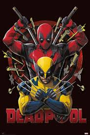
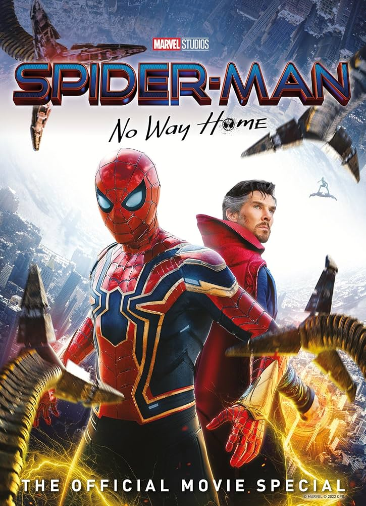
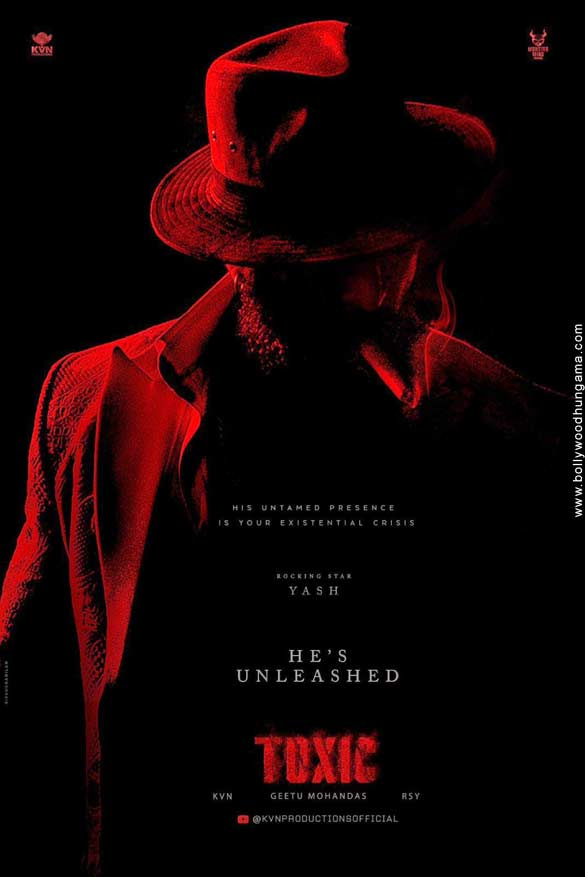

Song 1 💃
Song 2 💃
Song 3 💃

Deadpool & Wolverine is one of the most anticipated Marvel movies because it brings together two fan-favorite characters—Deadpool and Wolverine—played again by Ryan Reynolds and Hugh Jackman. The trailer broke viewing records due to the return of Hugh Jackman as Wolverine after his emotional farewell in Logan (2017), which created massive excitement among Marvel fans worldwide. Deadpool’s trademark humor, fourth-wall breaking, and R-rated tone combined with Wolverine’s gritty action made the trailer instantly viral across platforms like YouTube, X, and Instagram.

Spider-Man: No Way Home is a highly successful Marvel Cinematic Universe film that explores the consequences of Peter Parker’s identity being revealed to the world, which turns his life upside down and puts his loved ones at risk. In an attempt to fix the problem, Peter asks Doctor Strange to cast a spell to make everyone forget that he is Spider-Man, but the spell goes wrong and opens the multiverse. This causes villains from earlier Spider-Man films—such as Green Goblin, Doctor Octopus, and Electro—to enter Peter’s universe, creating intense challenges that test his morals and responsibilities as a hero. The movie is especially loved for its emotional depth, nostalgic return of previous Spider-Man characters, and powerful message about sacrifice, making it one of the most impactful and memorable films in the Spider-Man franchise.

Toxic: A Fairy Tale for Grown-Ups is an upcoming Indian period gangster film directed by Geetu Mohandas.[1] It features an ensemble cast including Yash, Rukmini Vasanth, Nayanthara, Kiara Advani, Tara Sutaria, Huma Qureshi, Akshay Oberoi and Sudev Nair. The film is jointly produced by Venkat K. Narayana and Yash under their respective banners, KVN Productions and Monster Mind Creations. The film was officially announced in December 2023 under the tentative title Yash 19, as it is the 19th film of Yash as a leading actor, with the official title revealed a few days later. Principal photography commenced in August 2024 in Bengaluru. The cinematography and music is handled by Rajeev Ravi and Ravi Basrur respectively. The film was simultaneously shot in Kannada and English.